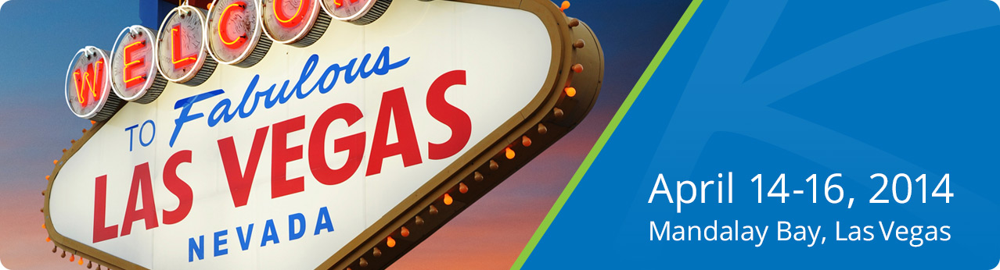

Did you know that Kaseya Connect attendees can also register for valuable pre-conference training? Make the most of your trip to Las Vegas by taking advantage of one of Kaseya’s pre-conference training options. Each course is two full days and will take place on April 12-13, 2014 at Mandalay Bay.
To participate in pre-conference training, please select one of the following training course options when you register for Kaseya Connect. Training seats are limited so please register for your preferred course early:
This 2-day training class is for experienced Kaseya administrators who do not need a training program, but simply want to take the Kaseya Certified Administrator exam. Attendees will use this session to understand how the exam is structured, review key concepts on the exam, and then sit the exam. This session is for those already experienced with Kaseya Virtual System Administrator (VSA) and already comfortable with general system configuration, agent deployment, audit, live connect and remote control, and have strong exposure to functions such as Patch Management, Ticketing, Info Center, Monitoring, and Agent Procedures. During this test prep session, candidates will be provided with the virtual lab environment utilized for the practicum on the exam, and run through sample hands-on exercises to prepare. On day 2, participants will take the Kaseya Certified Administrator exam, proctored by a Kaseya representative. Note: A "pass" on the exam is not guaranteed, but for those who do not pass, the training platform and a re-test will be extended for 30 days after the conference.
During this expert led, 2-day in-person workshop, administrators who are new to Kaseya will get started on the path to becoming a Kaseya Certified Administrator through an introduction to the core functions of the VSA. Topics will include Agent Deployment, Views, Templates, Agent Menu, Audit, Remote Control, Live Connect, Patch Management, Monitoring, Policy Management and Agent Procedure. Participants will be provided with a virtual lab environment and hands-on lab exercises during the course. After the course, participants will be given 90-days of access to the virtual lab environment, during which the remaining hands-on labs can be completed while preparing for the KCA exam. Students will have one attempt at the KCA exam during their training period.
Pre-conference training attendees are eligible for a special weekend rate of $139 per night at Mandalay Bay for the nights of April 11-12. A special rate of $89 per night is available from April 13 through April 16. Conference rates are available for a limited time. Click here to reserve online.